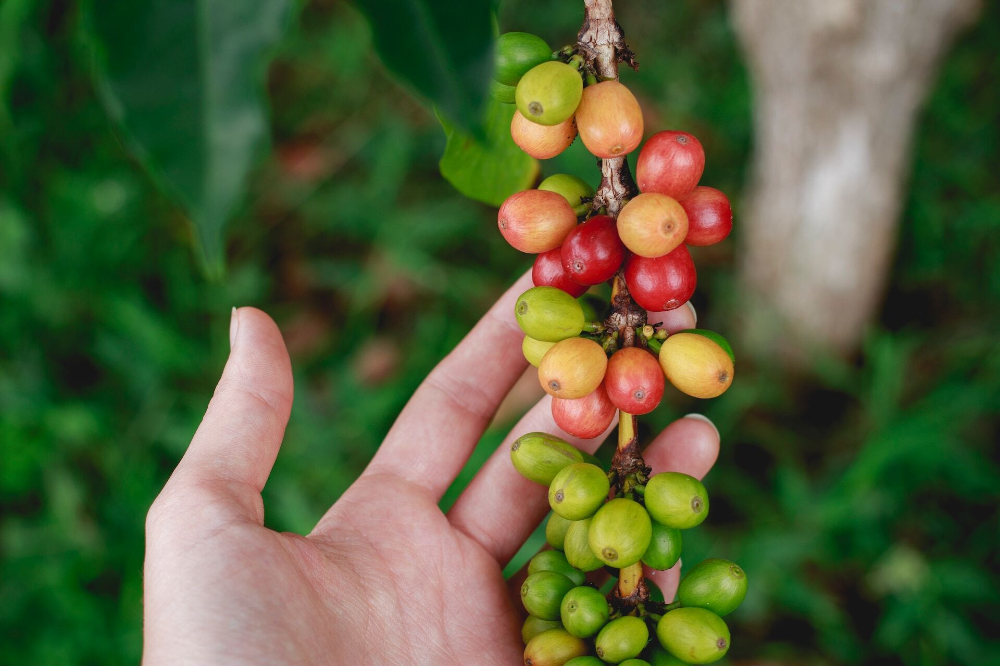
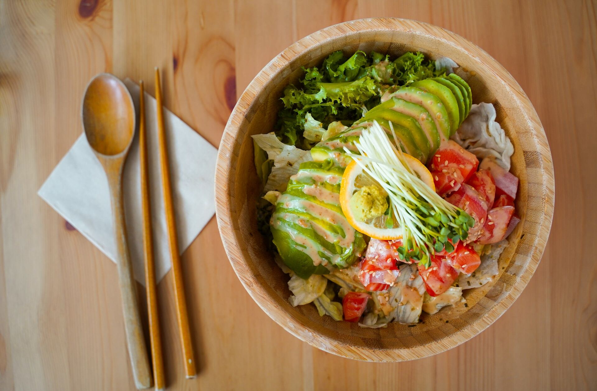

コンセプト

おいしさも、環境も
当店では厳選されたオーガニックコーヒーをご提供しています。化学的な処理をせずに育てられたコーヒー豆は、豊かな風味と共に自然の恵みを感じる一杯。心地よい味わいとともに環境への配慮も味わっていただけます。１杯のコーヒーから、より良い未来への一歩となることを願っています。

二子玉川の肥沃な大地の野菜たち
実は美味しい野菜が育つ土地、二子玉川。当店では、二子玉川で採れるオーガニック野菜をふんだんに使ったヘルシーなメニューを提供しています。季節ごとに変わる野菜の旨みを活かしたメニューは、地元農家さんたちの協力で作られています。ぜひ、新鮮な地元野菜の恵みをお楽しみください。
アクセス
〒158-0094
東京都世田谷区玉川２丁目２２−１３
Tel : 03-1234-5678
- 営業時間
- 9:00am - 10:00pm